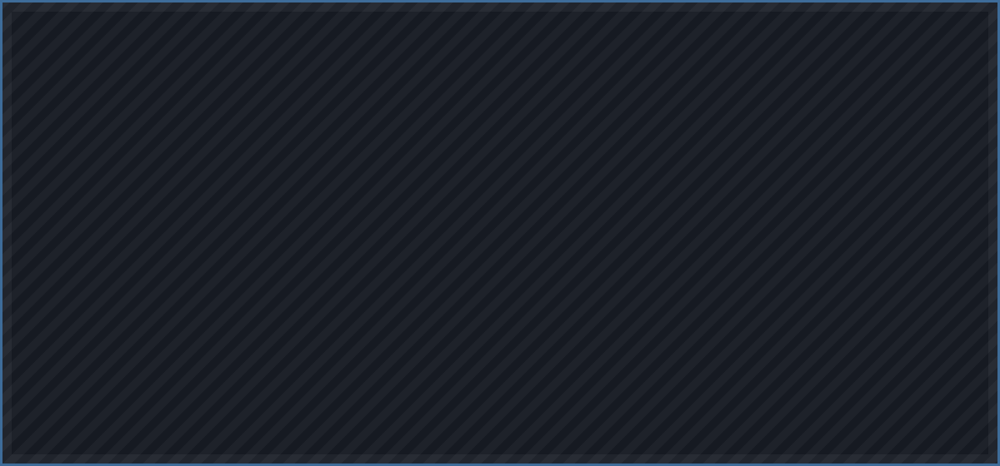

Cinematic Editor
v1.24.0Fly a camera along a keyframed path, record a fight and replay it as ghosts so you can frame the shot after it happened, grade the picture with a library of effects, and export the result as video. Client-side only — nothing is sent to the server.
-
Detached camera
Driven by a client-only entity, so your player never moves and the server sees nothing. Physical fly and walk modes are there when you want to be in shot.
-
Keyframed paths
Position, rotation and field of view on independent tracks, along Catmull-Rom splines with per-side easing.
-
Replay
Records every player once a tick, with their skins, armour, held items, swings and hit reactions. Runs on the timeline clock or one of its own.
-
Tracking & follow
Aim at a chosen player with a blendable weight, ride along at a set distance, or generate a perfect orbit around anything.
-
37 effects
Grading, bloom, anamorphic streaks, lens flare, motion trails, painterly, outline, grain, FXAA. Every one of them keyframable.
-
Subject masking
Any shader effect can be limited to one person, or to everything except them — monochrome world, subject in colour.
-
World capture
Writes the terrain of a fight into a new save, so a replay carries its own world and can be reframed months later.
-
Video export
PNG sequence or straight into ffmpeg. Fixed timestep, so a slow encoder makes the export longer rather than dropping frames.


| Key | Action |
|---|---|
| F8 | Open the editor |
| F7 | Toggle the free camera |
| F9 | Add a keyframe |
| F6 | Start / stop recording players |
| F10 | Play / stop the timeline |
| F4 | Enable / disable the whole mod |